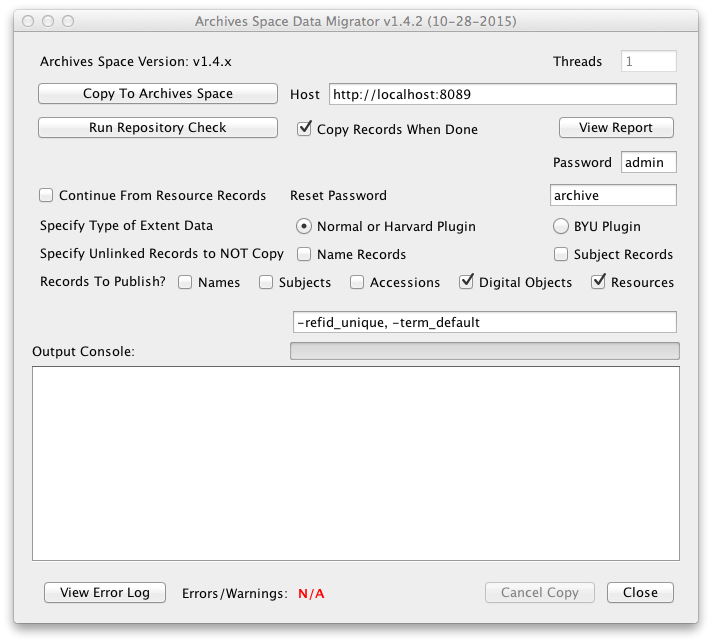
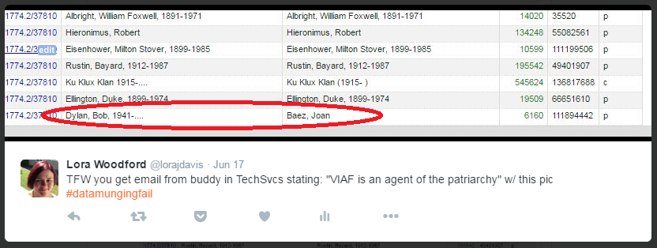
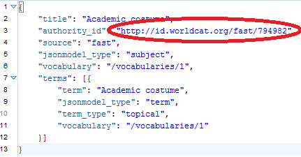
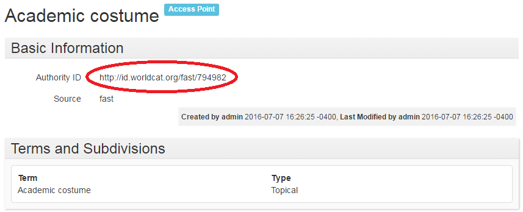
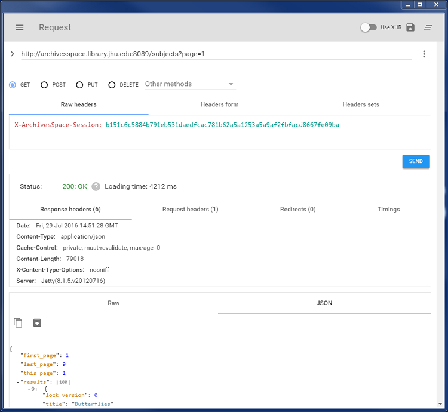
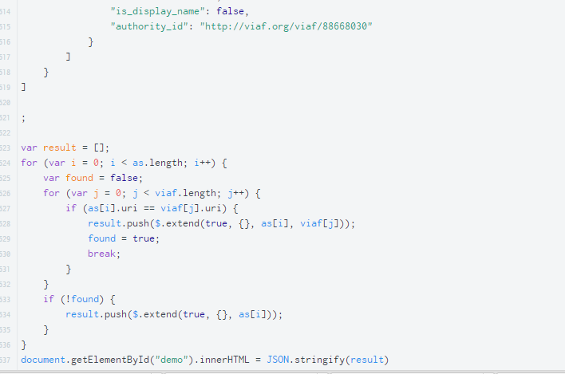

WHEN YOUR METADATA IS MESSYDATA:
Subject Cleanup via the ArchivesSpace API
Lora J. Davis | Digital Archivist | Johns Hopkins University
ArchivesSpace Migration as an Opportunity
Needs
- Have subject terms in ArchivesSpace
- Subject terms that are:
- consistent (e.g. minimize duplication)
- controlled (e.g. from an appropriate authority file)
Wants
- Make our data "linked data ready"
- Convert existing LCSH terms to FAST headings
- Get experience using the ArchivesSpace API
Step 1: Migrate

Step 2: Convert LCSH Subjects to FAST

Step 2: Convert LCSH Subjects to FAST (cont.)
 
Step 3: Generate JSON and POST
import json
import requests
baseURL = 'http://YOURBACKENDURL:8089'
user='YOURUSERNAME'
password='YOURPASSWORD'
auth = requests.post(baseURL + '/users/'+user+'/login?password='+password).json()
session = auth["session"]
headers = {'X-ArchivesSpace-Session':session, 'Content_Type':'application/json'}
with open('YOURJSONFILE.json') as jsonfile:
for line in jsonfile:
json_obj = json.loads(line)
json_string = json.dumps(json_obj)
subjects = requests.post(baseURL+'/subjects', headers=headers, data=json_string).json()
print subjects
All Done!!!
- Uh, nope
- We've got:
- Subject records
- Accession records
- Resource records
- But we don't got:
- Subject records that are *linked* to accession and resource records
Step 4: GET all Subjects, Resources, and Accessions via API
import json
import requests
baseURL = 'http://YOURBACKEND:8089'
user='USERNAME'
password='PASSWORD'
auth = requests.post(baseURL + '/users/'+user+'/login?password='+password).json()
session = auth["session"]
headers = {'X-ArchivesSpace-Session':session, 'Content_Type':'application/json'}
endpoint = '/repositories/3/accessions'
arguments = '?page=1&page_size=3000'
output = requests.get(baseURL + endpoint + arguments, headers=headers).json()
print(json.dumps(output.get('results'), indent=2))
Step 4 (aside): Client Option

Step 5: Link Subjects to Resources/Accessions

Step 5 (aside): Our Unique Situation
- We were doing this at the time of initial migration, so this workflow made sense for our use case.
- This might also work well if you're getting subjects from MARC records or a homegrown database.
- Essentially, your mileage may vary.
Step 6: Generate JSON and POST
import json
import requests
baseURL = 'http://YOURBACKENDURL:8089'
user='YOURUSERNAME'
password='YOURPASSWORD'
auth = requests.post(baseURL + '/users/'+user+'/login?password='+password).json()
session = auth["session"]
headers = {'X-ArchivesSpace-Session':session, 'Content_Type':'application/json'}
with open('YOURJSONFILE.json') as jsonfile:
for line in jsonfile:
json_obj = json.loads(line)
uri_print = json_obj['uri']
json_string = json.dumps(json_obj)
pushit = requests.post(baseURL + uri_print, headers=headers, data=json_string).json()
print pushit
Additional Resources
- "The Triad"
- Valerie Addonizio, Archivist, vaddoniz@jhu.edu
- Lora Davis, Digital Archivist, ljdavis@jhu.edu or @lorajdavis
- Eric Hanson, Digital Content Metadata Specialist, ehanson8@jhu.edu
- GitHub
- JHU: https://github.com/jhu-archives-and-manuscripts
- Personal: https://github.com/lorajdavis/
- THANK YOU FOR SHARING!!!